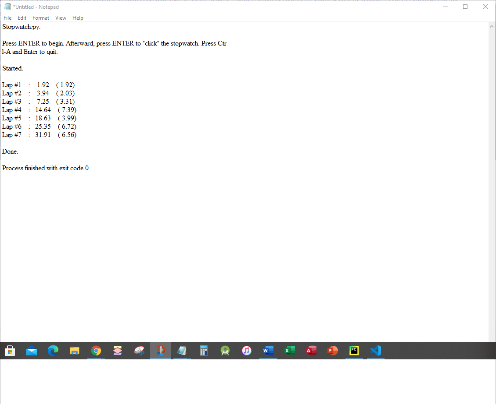

This is a program written in Python 3.9 called stopwatch.py.
This program tracks the amount of time elapsed between presses of the ENTER key, with each key press starting a new "lap" on the timer. Prints the lap number, total time in seconds, and lap time in seconds.
Pressing ENTER starts the program.
Pressing CNTL-C and ENTER stops the program.

#stopwatch.py - A simple stopwatch program
import time
#Display the program's instructions
print('Press ENTER to begin. Afterward, press ENTER to "click" the stopwatch. Press Ctrl-C and Enter to quit.') #Changed from Ctrl-C
input() # press Enter to begin
print('Started.')
startTime = time.time() # get the first lap's start time
lastTime = startTime
lapNum = 1
# Start tracking the lap times.
try:
while True:
input()
lapTime = round(time.time() - lastTime, 2) #rounds to 2 digits
totalTime = round(time.time() - startTime, 2) #rounds to 2 digits
print('Lap #%s: %s (%s)' % (lapNum, totalTime, lapTime), end=' sec') #print the lap number, total time elapsed, and the lap time
lapNum += 1
lastTime = time.time() # reset the last lap time
except KeyboardInterrupt:
# Handle the Ctrl-C exception to keep its error message from displaying.
print('\nDone.')